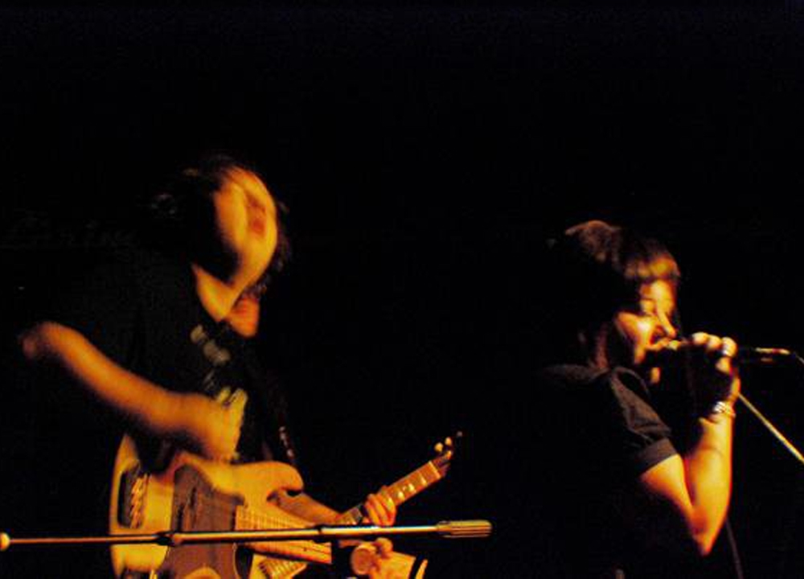

Spokeshaver
SpokeShaver was a 4 piece progressive punk/emo band formed in 2008 after the dissolution of Out on Bail. I answered a craigslist add looking for musicians interested in playing songs in the style of Jets to Brazil and The Broadways. Somehow 4 years later we were writing 20 minute suites of music influenced equally by the British prog rock of Yes and Genesis as much as the songs of Brenden Kelly or Blake Schwarzenbach. The band released a 6 song CD-EP in 2010 and sadly broke up before we could finish our second album, a concept record about the creative cycle and the difficulty of being in a band in the modern era. After the breakup of the band, Josie and Kristin went onto form Great American House Fire in 2012
SpokeShaver was Rich Hazen- Guitar, Nathan Marcy- Drums, Kristin Garramone- Vocals & Electric Piano, Josie Cool - Bass, Synths, & Vocals
Facebook
Bandcamp
SpokeShaver was Rich Hazen- Guitar, Nathan Marcy- Drums, Kristin Garramone- Vocals & Electric Piano, Josie Cool - Bass, Synths, & Vocals
Bandcamp